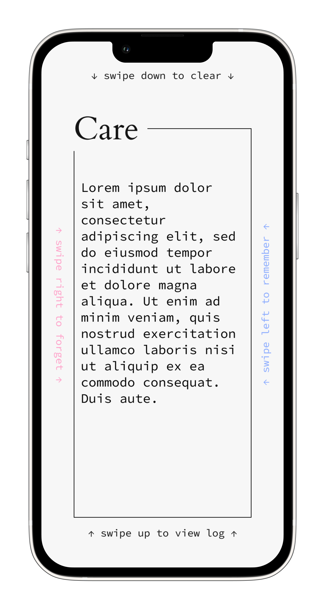
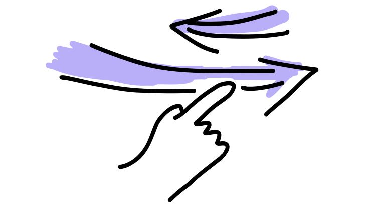
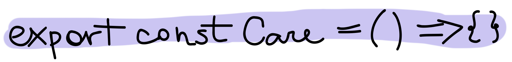

Care
Remember the good. Forget the bad.

Care is an application that saves your good memories, and lets you vent out the negative feelings – without saving them. Any good memory that Care saves, it will send you a notification about at a later date. Which might be when you really need it.
The logic of the application comes out of my graduate psychology training. Writing your thoughts down helps you verbalise and process them. And that’s what the application does. But being reminded of good memories also has a positive effect, and potentially may turn a good memory into one of gratitude, too.
The core of Care is the Create screen: a wide open blank space that’s all yours, to feel as you wish. And because this is not a notes app, the Log screen is secondary, there for you if you wish, but you don’t need to use it at any point. You may not delete any particular memory, but you can clear them all, if you like.
The app’s interface is swipe-based, to allow it to be more gestural and abstract, without any rigid buttons or rules, to allow Care to feel like a real space, and not just another app.
The idea for Care came to me a while back, but I was only able to start working on it recently, in August 2022, when I started to learn React Native, because it allowed me to finally build a real smartphone application with local storage and other tools such as notifications and swiping that aren’t really available when developing for the web.
The app is not finished yet. The basic structure and functionality is there, but the swipe gestures are a bit more of a learning curve to implement, so I am taking my time with it. You can see the planned design on Figma, and the current state of the code is here on GitHub or even try out the live application in its current state in Expo Snack. Just keep in mind that it’s still a work in progress!